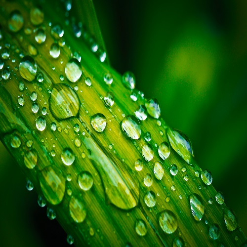

Als de zon schijnt, dan zie je niet altijd een regenboog. Wij ervaren zonlicht als wit licht, maar eigenlijk bestaat zonlicht uit allerlei verschillende kleuren licht. Die kleuren zien we pas als het witte zonlicht wordt gebroken door bijvoorbeeld regendruppels. Als die kleuren zichtbaar worden, zien we een regenboog regen. Een regenboog is dus een boog die je in de lucht ziet als er vochtigheid in de lucht zit: denk aan regen. Daar schijnt dan fel licht door, denk aan de zon.
Het licht van de zon lijkt geel of wit, maar bestaat eigenlijk uit een heleboel verschillende kleuren. Deze kleuren samen noemen we ook wel het kleurenspectrum. Met behulp van een prisma kan het kleurenspectrum zichtbaar gemaakt worden. Aan de buitenkant van het kleurenspectrum zien we de kleuren rood en violet, net als bij de regenboog. Eigenlijk zou een regenboog nog twee kleuren moeten laten zien; infrarood en ultraviolet. Omdat deze kleuren net buiten het voor ons zichtbare kleurenspectrum vallen, kunnen we deze kleuren niet zien. Sommige insecten kunnen bijvoorbeeld wel ultraviolet waarnemen, zoals honingbijen. Er zijn ook dieren die infrarood kunnen waarnemen, zoals de ratelslang en de boomadder. Maar hoe kan het nou dat we de kleuren van de regenboog toch kunnen zien?
De meeste dingen maken vaak zelf geen licht. Ze weerkaatsen licht, bijvoorbeeld van de zon of van een gloeilamp. De kleuren die we zien zijn kleuren die naar onze ogen worden weerkaatst. Een rode bloem is rood, omdat de rode kleuren beter worden weerkaatst dan de andere kleuren. Als iets wit is, worden alle kleuren weerkaatst. Alle kleuren bij elkaar is wit. Als alle kleuren geabsorbeerd worden, is het zwart. Dan wordt er niks weerkaatst.
Wit licht, zoals het zonlicht, bestaat uit allerlei kleuren. De primaire lichtkleuren zijn rood, blauw en groen. Dit komt overeen met de lichtgevoelige kegeltjes in het netvlies van het oog (Kersbergen, C. & Haarhuis, A. 2015). Er bestaan drie verschillende soorten kegeltjes en elk soort kegeltje is gevoelig voor één van de primaire lichtkleuren. Als een andere kleur dan rood, blauw of groen wordt waargenomen, dan worden meerdere soorten kegeltjes tegelijk beïnvloed, waardoor er een signaal van een mengkleur wordt doorgegeven aan de hersenen.
| Regenboog | Hemel | ||
| Zonlicht | Aarde | ||
| Regendruppels |  | Zon | |
| Lucht | Regen |
Als het licht van de zon door de lucht gaat die om de aarde hangt wordt het gesplitst. Dat komt omdat het licht dan veel verschillende gassen, stofjes en waterdruppels tegenkomt. In de lucht kun je dan ook veel verschillende kleuren zien. Heldere luchten zijn blauw en de hemel bij een zonsondergang kan fel rood zijn. Het mooiste voorbeeld van kleuren aan de hemel is misschien wel de regenboog.
Een regenboog is een gekleurde boog van regendruppels in de lucht. De regenboog ontstaat als het regent en de zon schijnt of als er hoge vochtigheid is en de zon is erg fel. Als het licht door de regendruppels schijnt, wordt het licht gebroken en weerkaatst. Daardoor worden de kleuren apart zichtbaar. De regenboog is eigenlijk een cirkel. Wij zien een boog omdat de helft van de cirkel verdwijnt in de grond. Vaak wordt namelijk gedacht dat een regenboog maar half is, maar dit klopt niet. Een regenboog is geheel rond. Als je hoog bent, zie je een groter deel van de regenboog. In het vliegtuig kan je zien dat het echt een cirkel is.
De regenboog bestaat dus uit een heleboel kleuren. De 7 opvallendste kleuren zijn op volgorde:
Soms zie je twee regenbogen tegelijk. Een regenboog zie je duidelijk. Die is fel. De tweede regenboog is minder vel en is vaak iets groter. Bij de oorspronkelijke regenboog zijn de kleuren op de goede volgorde, namelijk: rood, oranje, geel, groen, blauw, indigo, violet. Bij de tweede regenboog zijn de kleuren andersom. De buitenste laag is dan blauw en de binnenste laag is rood. De volgorde is dan dus andersom.